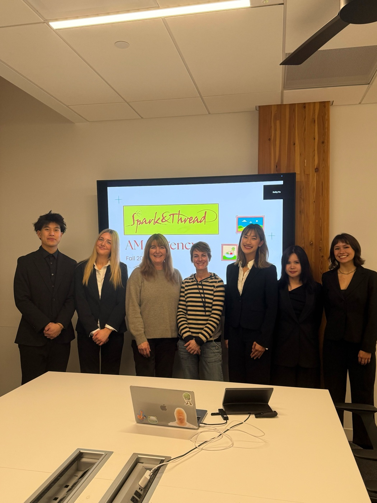

Brand Repositioning Consulting
- Problem
- A Seattle handcrafted home goods business wanted to reposition its brand and grow online.
- What I did
- Advised the owner as part of a 5-person team, delivering weekly proposals. Conducted consumer research and turned the findings into a social media redesign and SEO plan, and designed an e-commerce channel strategy integrating an online storefront across the client's website and social platforms.
- Outcome
- Weekly proposals delivered to the owner across the engagement.